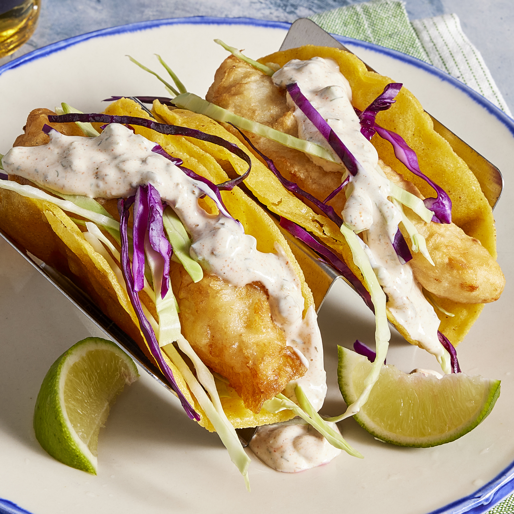

Fish Tacos

Discription
These fish tacos taste just like home. I'm from San Diego, but we live in
the South now, and nobody has heard of fish tacos here! Serve with
homemade pico de gallo and lime wedges to squeeze on top.
Ingredients
- Beer Batter
- White Sauce
- Fish Tacos
Directions
-
Make beer batter: Combine flour, cornstarch, baking powder, and salt in
a large bowl. Blend beer and egg in a separate bowl, then quickly stir
into flour mixture until combined with a few lumps remaining.
-
Make white sauce: Mix together yogurt and mayonnaise in a medium bowl.
Gradually stir in fresh lime juice until consistency is slightly runny.
Season with jalapeño, capers, cayenne, oregano, cumin, and dill.
-
Start fish tacos: Heat oil in a deep-fryer to 375 degrees F (190 degrees
C).
-
Dust fish pieces lightly with flour. Dip into beer batter, then fry in
hot oil until crisp and golden brown. Drain on paper towels.
-
Lightly fry tortillas in hot oil until just crisped, but not too crisp.
Drain on paper towels.
-
Place fried fish in tortillas; top with shredded cabbage and white
sauce.